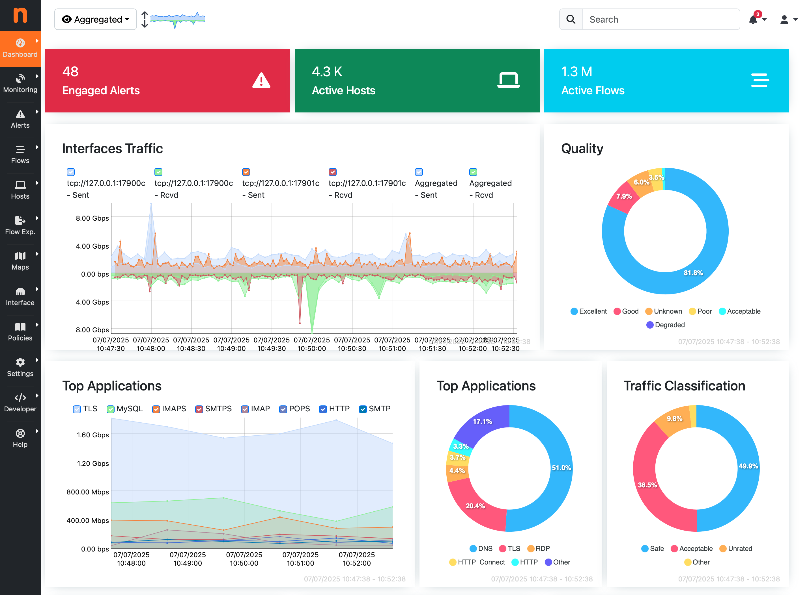
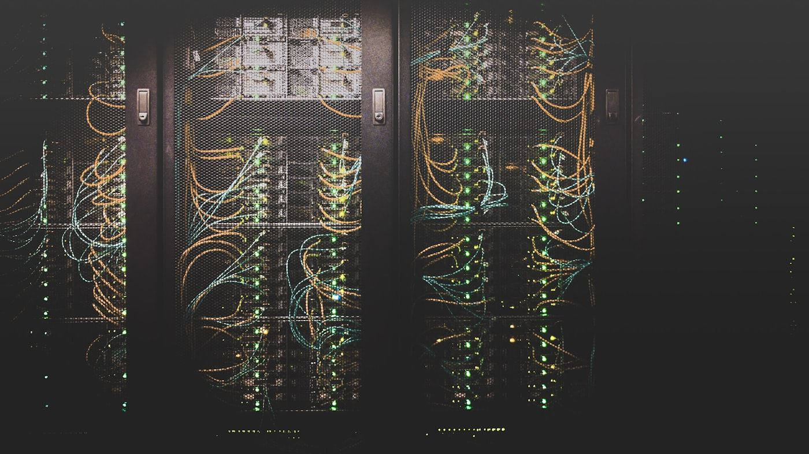
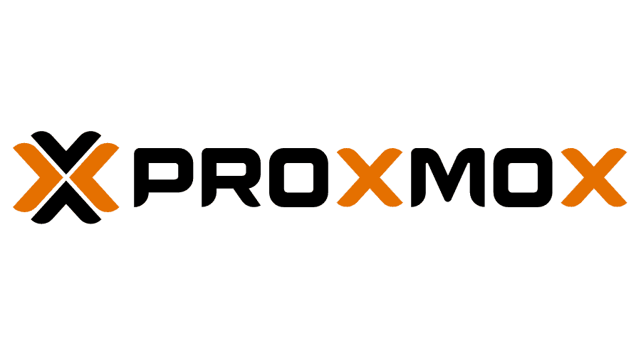
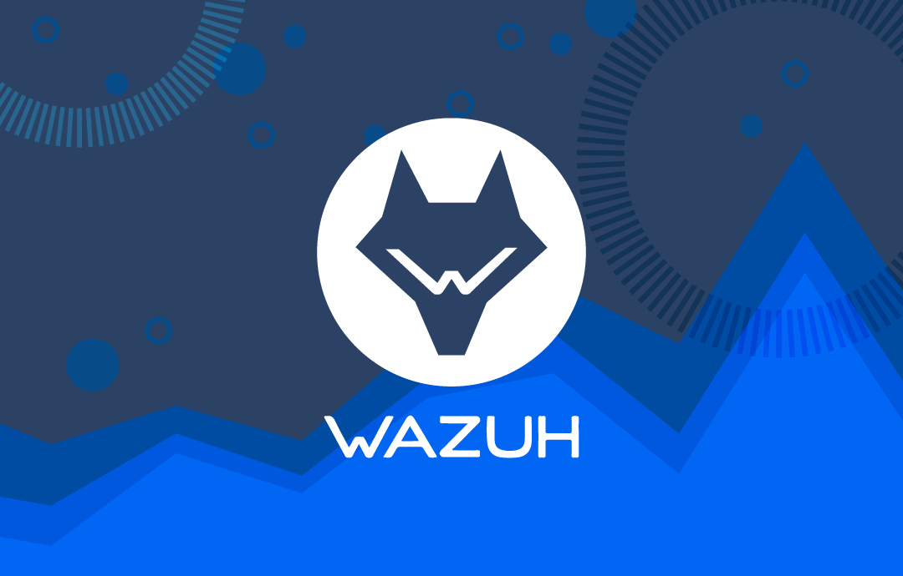

ntopng: A Powerful Network Traffic Monitoring and Analysis Tool
Learn how ntopng helps businesses monitor network traffic, analyze bandwidth, identify top talkers, and improve operational visibility.
Read ArticleExplore real-world guidance on virtualization, security, collaboration, monitoring, and infrastructure modernization for Indian businesses that want better technology decisions without unnecessary licensing spend.
These articles are written to help founders, IT managers, and operational leaders understand where savings, risk reduction, and implementation effort usually sit before a project begins.

Learn how ntopng helps businesses monitor network traffic, analyze bandwidth, identify top talkers, and improve operational visibility.
Read Article
A startup-focused look at where open-source tools reduce software spend, improve flexibility, and support secure scaling without unnecessary license overhead.
Read Article
A practical look at where Proxmox fits best, what businesses should evaluate before migration, and how to think about savings beyond the license line item.
Read Article
Understand where Wazuh adds value, where it needs planning, and how to approach SIEM and endpoint visibility with realistic operational expectations.
Read ArticleA business-first comparison of data control, recurring cost, collaboration experience, user expectations, and support complexity.
Read ArticleUse these pages to continue planning your stack, budget, and rollout path.